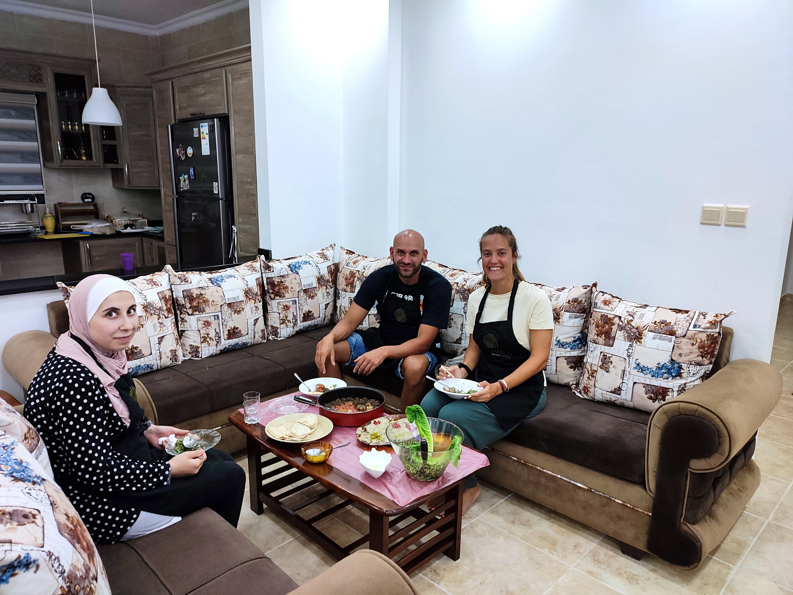
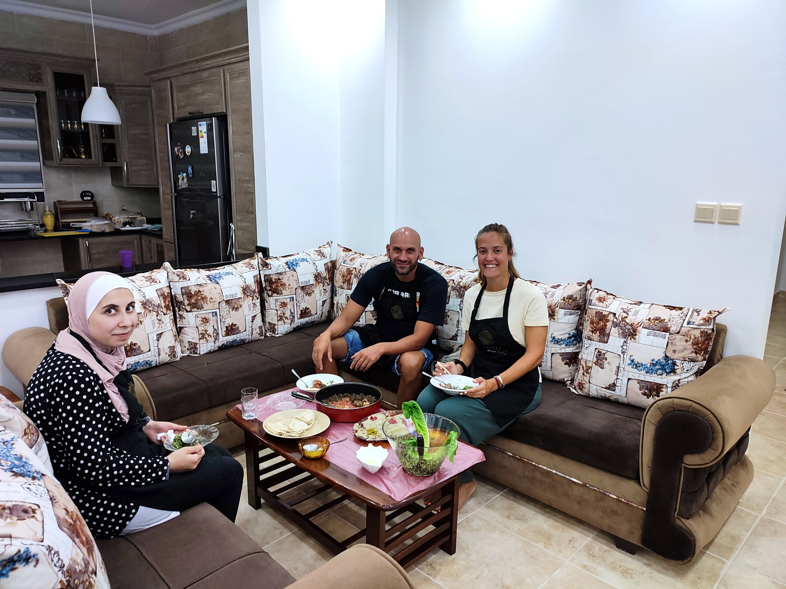

Overview
Step back in time and uncover the hidden stories of the Old Town. This tour is led by a local historian and focuses on the architecture, legends, and pivotal moments that shaped the city from the 13th century to the present day. It's an easy-paced, informative, and highly-rated experience.
Quick Facts
| Duration | 2.0 Hours |
|---|---|
| Group Size | Max 15 participants |
| Language | English, Spanish |
| Difficulty | Easy (Flat terrain, moderate pace) |
| Meeting Point | The Old Clock Tower |
What You'll See
- **The Clock Tower:** The tour begins with the legend of the clockmaker and the city's oldest market square.
- **Hidden Courtyards:** Discover the secret passages and private gardens tucked away from the main streets.
- **The Merchant's Guild:** Learn about the powerful guilds that controlled the city's wealth and politics.
- **Final Stop:** Concludes at the Cathedral, with recommendations for local cafes.
Meet Your Guide

Alex Vesper
Alex is a licensed city historian and lifelong resident. His passion for local folklore and architecture brings the stones of the Old Town to life.
Gallery

 

Reviews
★★★★★
5.0/5.0 (Based on 312 reviews)
"Alex was fantastic! The tour was engaging, informative, and perfectly paced. Highly recommend for anyone visiting the city."